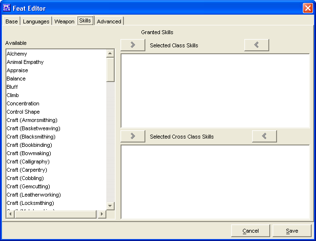

The Skills Tab is used to add the ability to use weapons not normally available to clerics to a priest who selects the Feat being created.
The three Granted Skills windows, Available , Selected Class Skills and Selected Cross Class Skills are used to create a list of skills which the Feat grants.
The Cancel and Save buttons, which appear on every tab, are used to either cancel the Feat creation or save it to the customFeats.lst file.